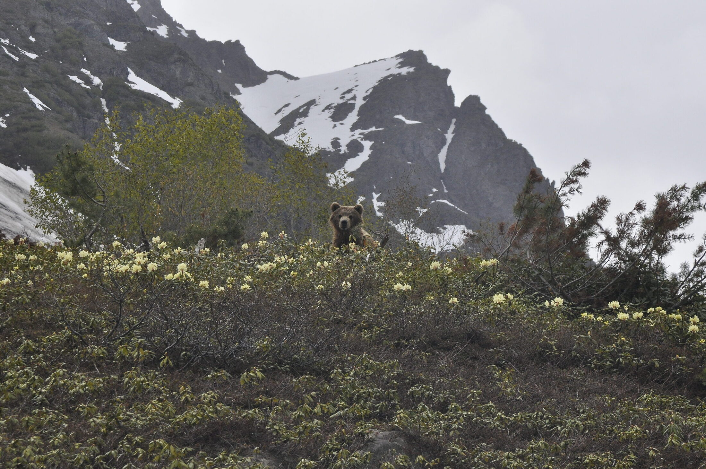

Short web CV
Appointments, education, and teaching.
Contact
Contact
- Email: anton.kutyrev@wits.ac.za
- ORCID: 0000-0001-5933-6455
- Google Scholar: Google Scholar
- ResearchGate: ResearchGate
Current role
Current role
- 2025-present. Postdoctoral Research Fellow, School of Geosciences, University of the Witwatersrand, Johannesburg, South Africa. Research on critical minerals in layered mafic-ultramafic intrusions and Bushveld chromitites, with focus on Ni-Cu-PGE systems and the Critical Zone.
Education
Degrees
- 2020. PhD in Geology and Mineral Sciences, defended in 2019; awarded via the Dissertation Council at the V.S. Sobolev Institute of Geology and Mineralogy (SB RAS), with research conducted at the Institute of Volcanology and Seismology (RAS), Petropavlovsk-Kamchatsky.
- 2017. Saint Petersburg Mining University, Russia. Specialist degree with Distinction in Applied Geology, broadly equivalent to an MSc.
Academic appointments
Previous roles
- 2023-2025. Research Associate, School of Earth and Environmental Sciences, Cardiff University, Wales, UK.
- 2022-2023. Fulbright Visiting Scholar, School of Earth Sciences, University of Oregon, USA.
- 2020-2022. Research Associate, Institute of Volcanology and Seismology, Petropavlovsk-Kamchatsky, Russia.
- 2017-2020. PhD candidate, Institute of Volcanology and Seismology, Petropavlovsk-Kamchatsky, Russia.
- 2012-2017. Engineer (0.5 FTE), Karpinsky Russian Geological Institute, Saint Petersburg, Russia.
Industry experience
Industry
- 2018. Geologist (summer fieldwork), Kirganik Ltd. (Amur Minerals subsidiary), Kamchatka, Russia.
- 2016-2017. Geologist (summer fieldworks), Kamp Ltd., Kamchatka, Russia.
- 2015. Field technician (summer fieldwork), Kamchatgeologia, Kamchatka, Russia.
Teaching
Teaching and supervision
- Guest lectures and practical teaching at the University of the Witwatersrand, Cardiff University, and the University of Oregon across mineral deposits, petrology, field geology, and geohazards.
- 2025-present. Supervisor of the project "Mineralogy of the iron-rich ultramafic pegmatites, eastern Bushveld Complex" (student: Botshelo Tshite).
Profile
Profile
- Research focus: petrology and mineralogy of mafic-ultramafic and island-arc systems, chromitites, PGE mineralogy, oxygen isotopes, and critical minerals.
- Methods: SEM-EDS, Raman spectroscopy, EPMA, LA-ICP-MS, isotope geochemistry, Python workflows, MELTS and MAGEMin modelling.